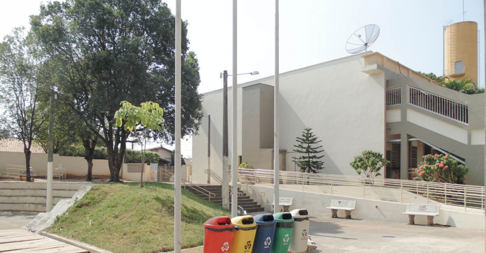
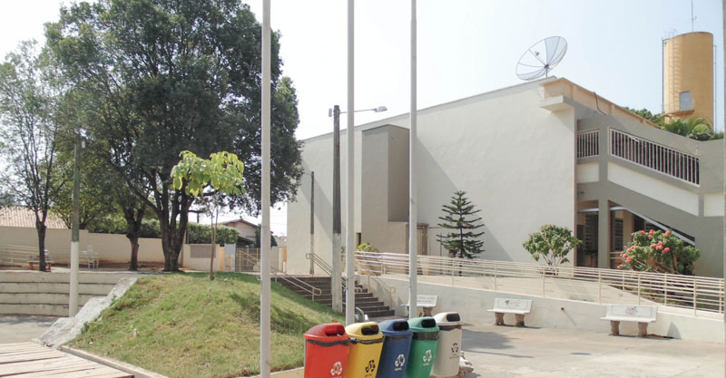

FATEC JALES
A Fatec Jales iniciou suas atividades em 10 de setembro de 2007, instalada em espaço concedido pela Secretaria da Ciência, Tecnologia e Desenvolvimento Econômico, do Estado de São Paulo. O curso superior inicial oferecido foi de Tecnologia em Agronegócio. No primeiro semestre de 2010, foi implantado o curso de Tecnologia em Sistemas para Internet. No segundo semestre de 2014, foi implantado o curso de Tecnologia em Gestão Empresarial, esse sendo oferecido também na modalidade EAD (Ensino a Distância) a partir de 2015. A partir do segundo semestre de 2017, foi implantado o curso de Tecnologia em Análise e Desenvolvimento de Sistemas. Atualmente os cursos de Tecnologia em Agronegócio, Sistemas para Internet e Gestão Empresarial são oferecidos no período noturno e o curso de Tecnologia em Análise e Desenvolvimento de Sistemas para o período diurno. A Fatec Jales também realiza e participa de diversas campanhas, eventos, cursos extras e minicursos, tudo isso de forma que a comunidade possa usufruir das instalações que favorecem o processo de ensino.
Acesse o site da Fatec Jales clicando aqui, e conheça mais sobre ela.

 
